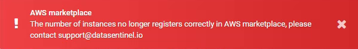
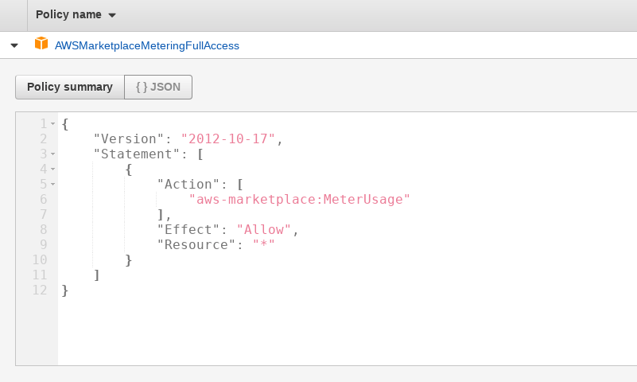

Launch Datasentinel on AWS with MarketPlace metering service¶
Note
1. AWS Marketplace Metering Service¶
Note
2. EC2 requirements¶
The EC2 instance containing the Datasentinel server must meet the following requirements.
Requirement |
Details |
|---|---|
IAM role permission |
An IAM role with the aws-marketplace:MeterUsage permission must be associated with the EC2 instance
This permission allows the role to contact the Metering Service API and record usage.
A user with rights to define and assign roles can create the role in either of the following ways:
1. Create the role on the Configure Instance Details panel of the wizard
To get the aws-marketplace:MeterUsage permission, attach the AWS managed policy AWSMarketplaceMeteringFullAccess to the role.
If a role with the required permissions is not associated with the EC2 instance,
Datasentinel reports issues with metering service availability.
For more information, see:
|
Access to the metadata URL |
The EC2 instance must have HTTP connectivity to 169.254.169.254, which is a local IP address accessible only from within Amazon instances.
To validate that the EC2 instance can access the metadata service, execute the following command:
curl http://169.254.169.254/latest/meta-data/
The command returns a list of available metadata items.
For more information:
|
Access to the metering service |
The EC2 instance must be able to reach the AWS Metering Service (MeterUsage API).
The region is where your EC2 instance is running
For example: https://metering.marketplace.us-east-1.amazonaws.com
To be able to launch Datasentinel, you must have an Internet gateway configured.
The Metering Service has an endpoint on the public Internet.
To access the Metering Service, your Virtual Private Cloud must be configured to allow an outbound HTTPS connection to the public Internet.
For more information, see https://docs.aws.amazon.com/vpc/latest/userguide/vpc-network-acls.html
To validate that the EC2 instance can connect to the Metering Service, execute the following command:
Replace {region} with the region where your EC2 instance is running.
You should receive healthy as a response from the server.
|
3. How to subscribe to Datasentinel?¶
Log in to the AWS Marketplace
Enter Datasentinel in the search field
{kind=link}
Product information is displayed. Then click on the button
{kind=link}
Subscription information is displayed. Then click on the button
{kind=link}
Choose your desired region from the drop down list.
Note
Then click on the button
{kind=link}
Select an instance type that is at least a t2.xlarge. Datasentinel is also available on EC2 instances of type m5
Note
Select a role with the required permission or create it (see the EC2 requirements section for more information)
{kind=link}
Keep metadata accessible, both v1 and v2
{kind=link}
Set the storage size. (Default 20GB)
Note
Add security rules
{kind=link}
Then Launch the instance. It will take a few minutes to complete.
4.. How to connect to Datasentinel?¶
How to access your EC2 instance
You can connect to the Linux AMI using SSH and the user ec2-user. Authentication is based on a public key
To connect to Datasentinel application
Open a web browser and enter the host name (Public DNS) or IP address of your new Datasentinel instance as the URL.
To log in, enter datasentinel
The default password is datasentinel (Change it once connected)
5. Troubleshooting¶
If you get this error when connecting to the GUI, it indicates a communication problem between Datasentinel and the AWS marketplace.
{kind=link}
- There are several possible reasons
The IAM Role does not exist or does not have the right rights
IAM Role Example:
Metadata is not accessible (Version v1 and v2)
To check metadata service, connect to the server via ssh with ec2-user, and type
curl --max-time 1 http://169.254.169.254/latest/meta-data/product-codesYou should see the product code in the response
{kind=link}
6. How to add your PostgreSQL instances?¶
Once the installation is complete, all that remains is to configure the instances to monitor.
You will have the choice between the Agent-based or Agentless mode
Agent-based mode
Install an agent locally on each server and configure it to communicate with the platform. See Documentation
Ideal if you manage your own postgresql instances.
Agentless mode
Configure connections directly through the user graphical interface
Ideal if you use AWS managed instances (rds, aurora)
You can automate the addition of connections thanks to the API (Agentless mode)
Enjoy